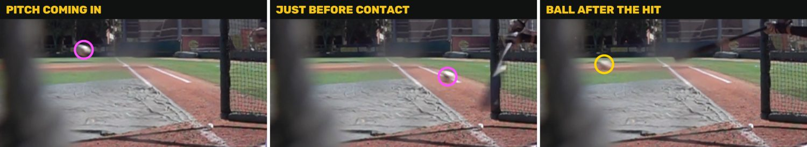

Ball found
Batting practice in slow motion
It followed the pitch in (pink) and the ball back out after the hit (yellow), through a blurry net in front of the camera.
The speed is rough here because this camera faced the ball's flight instead of looking across it.